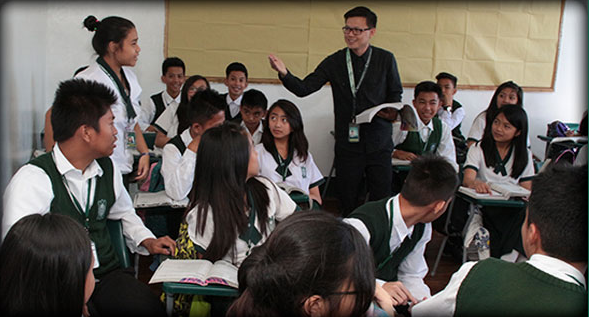
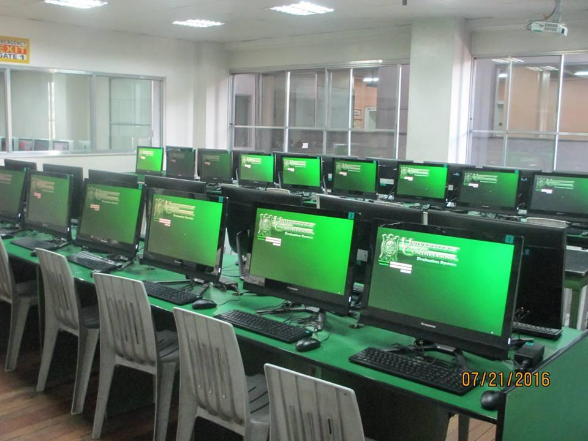
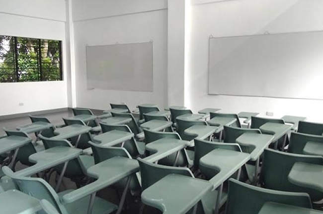

UC Junior and Senior High School
Admission SY 2021-2022
UC News
UC Accounting Student Tops the 13th Luzon Hub National Accounting Quiz Showdown
UC College of Accountancy 3rd year BSA student Alexander Salvador C. Bandiola Jr. wins 1st place in Luzon Hub 13th National Accounting Quiz Showdown on February 13, 2021. The 13th Philippine Institute of Certified Public Accountants National Accounting Quiz Showdown is an annual academic event of the National Federation of Junior Philippines Institute of Accountants. Alexander is the leading representative of Luzon for the National Level of the Competition.Videos
Why UC?
On June 10, 2010, the University of the Cordilleras was conferred the "Autonomus Status" by the Commission on Higher Education (CHED), after being issued the "Award of Distinction" certificate by the CHED Chairman himself, Emmanuel Y. Angeles. The certificate cited UC's exemplary performance in the trilogy functions of higher education, namely: instruction, research in public service, and in recognition of the outstanding performance of its graduates; which manifest UC's genuine commitment to quality excellence and global competitiveness. This distinction came after UC's assessment and affirmation of quality standards through CHED's "Institutional Quality Assurance through Monitoring and Evaluation (IQuAME)" during a visit by CHED's respected panels of experts and assessors from different institutions and regions on May 16, 2010. The 3-day visit, highlighted with interviews and ocular inspection, provided for the panel, evidences of substantive and significant adherence to the following quality assurance areas: Governance and Management, Quality of Teaching and Research, Support for Students, Relations with the Community, and Management of Resources. Whereupon, the CHED Commissioners, in an en banc session in May 26, 2010, certified and approved the panel's final report recommendation, that UC have complied with all quality standards corresponding to "Category A(teaching)", or as a "Teaching University". UC is so far the only Higher Educational Institution in the Cordillera Administration Region (CAR) to achieve this highest level of categorization through an institutional accreditation. This certification and the awarding of Autonomous Status is a manifestation of UC's policy to deliberately seek external scrutiny, as an engine for assuring continuous institutional self-improvement.
UC Announcements
Career Streaming by UC Integrated School
Attention to all SHS students, parents, guardians, teachers, and those who are interested to join. The UC Integrated School Office of the Student Welfare Services will be conducting a webinar on March 19 and 26, 2021 via Zoom.Photos


UC College

Admission SY 2021-2022